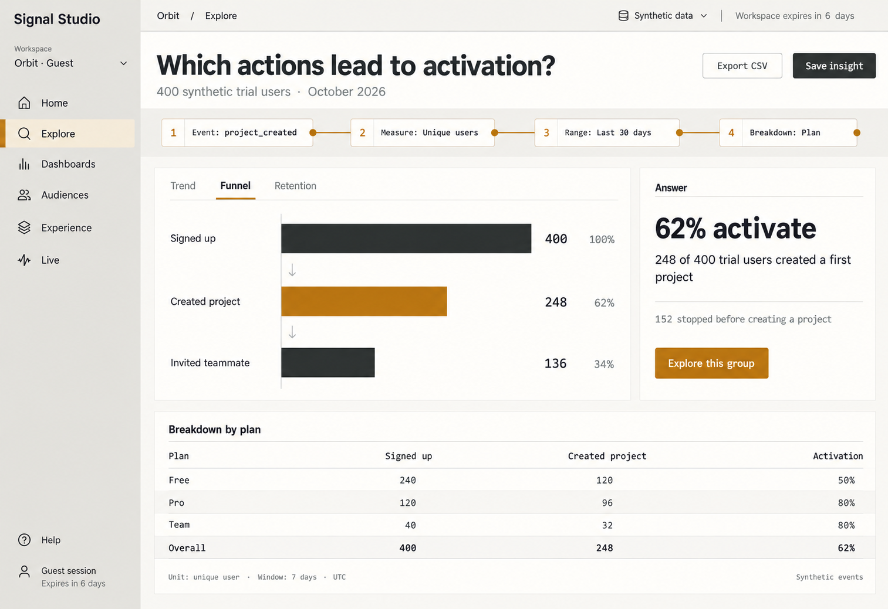
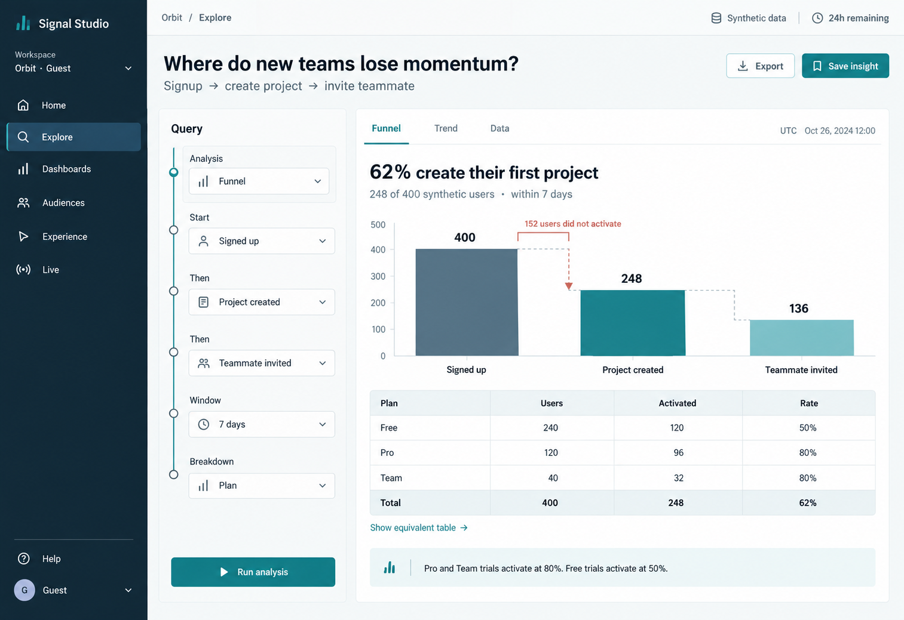
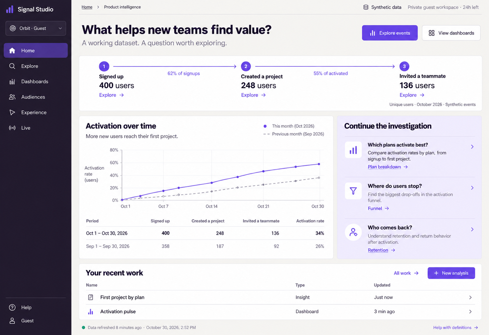
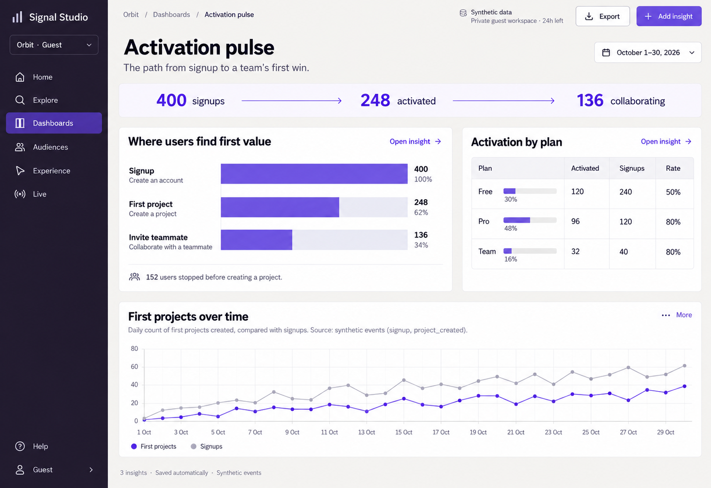
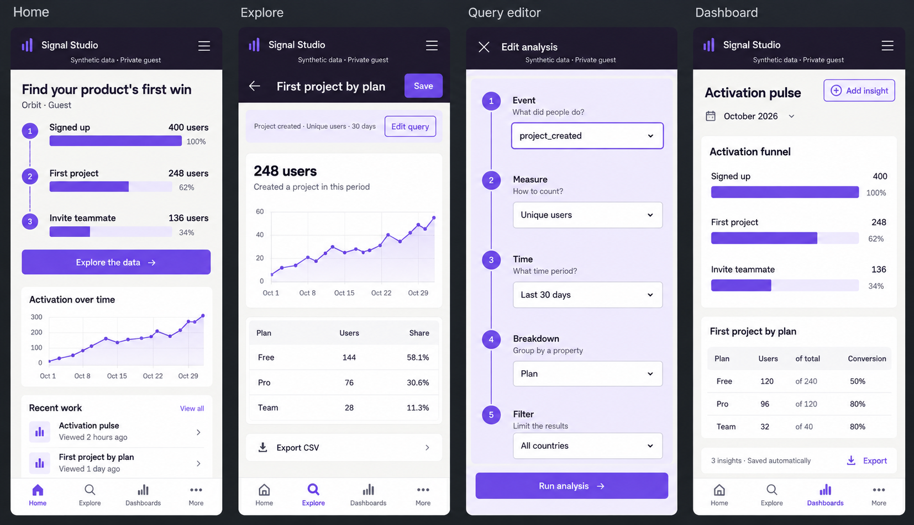
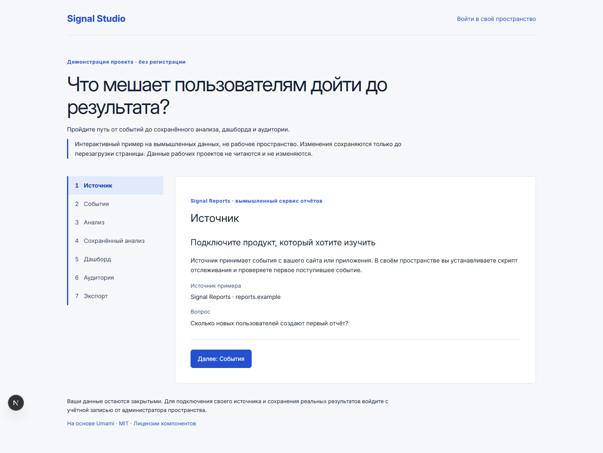

Макет imagegen · Выбрано
A · Precision Violet
Тёмная навигация, светлый рабочий холст и фиолетовая цепочка анализа. Вопрос, настройки и результат читаются как единый инструмент.
Гостевое пространство · новый интерфейс
Гость сразу получает рабочий аналитический интерфейс с серверным сохранением и отдельными данными. Новая визуальная система связывает вопрос, цепочку анализа и его результат.
Посмотреть до / послеДизайнерский выбор
Все варианты созданы через imagegen. Выбрано направление, в котором цепочка анализа становится главным визуальным знаком, а результаты остаются точными и спокойными.
Тёмная навигация, светлый рабочий холст и фиолетовая цепочка анализа. Вопрос, настройки и результат читаются как единый инструмент.

Сдержанный графит и янтарная линия запроса. Сильная табличная подача и ясное объяснение воронки.

Морской синий и бирюза. Точный исследовательский интерфейс с акцентом на потери между этапами.
Контрастная навигация освобождает светлый холст для данных. Связанные узлы Query Spine показывают, как настройки превращаются в ответ. Фиолетовый выделяет действие и аналитическую связь.
Общая палитра и ритм, отдельные зоны вопроса и результата, простые таблицы, графики с понятными знаменателями. Определения и технические пояснения раскрываются по запросу.
Precision Violet · макеты imagegen
Числа и подписи в сгенерированных макетах иллюстративны. Макеты задают композицию и визуальную систему. Расчёты рабочего приложения выполнены по сохранённым синтетическим событиям и показаны в следующем разделе.

От регистраций к активации и повторному использованию.



Результат доступен сразу; сложные настройки запроса получают отдельное пространство. Таблицы и элементы управления сохраняют читаемость.
Реальные скриншоты
Шесть разделов одного пространства. Скриншоты сняты с работающего Signal Studio: компьютер 1440 × 1000, телефон 390 × 844. Каждый снимок открывается в полном размере.
Набор данных явно синтетический: 336 пользователей, 84 аккаунта и 1 281 событие за 42 дня. Воронка: 336 регистраций → 252 завершения настройки → 168 активаций; итоговая конверсия 50 %. События проходят через обычную аналитическую логику приложения.
Визуальные изменения
Сравнение исходной композиции и нового гостевого интерфейса. Данные и периоды в кадрах различаются; смысл сравнения — организация интерфейса и доступный пользователю сценарий.


Отдельный лист: анализ на компьютере и телефоне, выбранный макет и его воплощение в работающем приложении.
Публичная версия · HTTPS
Эти кадры сняты с Vercel после публикации версии 194eab4ba. Полный гостевой сценарий прошёл 6 из 6 проверок; шесть разделов на компьютере и телефоне — без серьёзных ошибок axe и горизонтального переполнения.
Попробовать без регистрации ↗Контекст
Макеты созданы встроенным imagegen по исходным промптам. Новые шрифты, иконки и внешние визуальные зависимости для галереи не добавлялись.